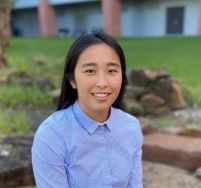

Rachel Van Drunen
Welcome
Welcome to my homepage! I am a neuroscience postdoctoral researcher with Alexander Fleischmann at Brown University. I graduated with a PhD in neuroscience during the summer of 2024 from the University of Texas Health Science Center in Houston under the guidance of Kristin Eckel-Mahan. I earned my BS in neuroscience from Trinity University in 2018.
My thesis research focused on the intersection of circadian biology, metabolism and neuroscience (Van Drunen et al., 2024). In the last year of my PhD I conducted chronobiology research in the Gad Asher Lab at the Weizmann Institute in Rehovot Israel under the Fulbright Scholarship (Dandavate..Van Drunen et al., 2024).
My graduate experience was fruitful. I received over $50,000 in private funding and over $100,000 in goverment funding. This included the NIH F31 training grant, the Fulbright Scholarship and the John J Kopchick Fellowship. In addition to my first author paper, my collaboration with others led to my inclusion on 6 academic papers. I also recevied the opprotunity to present my work as a talk at two major conferences (SRBR 2022 and the Neural Control of Appetite 2022 Keystone Symposia).

2024
Van Drunen, R., Dai, Y., Wei, H., Fekry, B., Noori, S., Shivshankar, S., Bravo, R., Zhao, Z., Yoo, S., Justice, N., Wu, J. Q., Tong, Q., & Eckel-Mahan, K. (2024). Cell-specific regulation of the circadian clock by BMAL1 in the paraventricular nucleus: Implications for regulation of systemic biological rhythms. Cell Reports, 43(1), 114380.
Dandavate, V., Bolshette, N., Van Drunen, R., Manella, G., Bueno-Levy, H., Zerbib, M., Kawano, I., Golik, M., Adamovich, Y., & Asher, G. (2024). Hepatic BMAL1 and HIF1a regulate a time-dependent hypoxic response and prevent hepatopulmonary-like syndrome. Cell Metabolism, 36(1), 1–16.
Gao, Z., Bravo Santos, R., Rupert, J., Van Drunen, R., Yu, Y., Eckel-Mahan, K., & Kolonin, M. G. (2024). Endothelial-specific telomerase inactivation causes telomere-independent cell senescence and multi-organ dysfunction characteristic of aging. Aging Cell, 23(6), e14138.
2022
Fekry, B., Ribas‐Latre, A., Van Drunen, R., Bravo Santos, R., Shivshankar, S., Dai, Y., Zhao, Z., Yoo, S.H., Chen, Z., Sun, K., Sladek, F.M. and Eckel-Mahan, K. (2022). Hepatic circadian and differentiation factors control liver susceptibility for fatty liver disease and tumorigenesis. The FASEB Journal, 36(9), p.e22482.
2020
Kim, E. R., Xu, Y., Cassidy, R. M., Lu, Y., Yang, Y., Tian, J., Li, D. P., Van Drunen, R., Ribas-Latre, A., Cai, Z. L., Xue, M., Arenkiel, B. R., Eckel-Mahan, K., Xu, Y., & Tong, Q. (2020). Paraventricular hypothalamus mediates diurnal rhythm of metabolism. Nature Communications, 11(1), 3794.
Jimenez-Vergara AC, Van Drunen, R., Cagle T, Munoz-Pinto DJ. (2020). Modeling the Effects of Hyaluronic Acid Degradation on the Regulation of Human Astrocyte Phenotype Using Multicomponent Interpenetrating Polymer Networks (mIPN). Scientific Reports, 10(1):20734.
2019
Van Drunen, R., Jimenez-Vergara AC, Tsai EH, Tchen R, Cagle T, Agee AB, Roberts J, Steele JM, Munoz-Pinto DJ. (2019). Collagen based multicomponent interpenetrating networks as promising scaffolds for 3D culture of human neural stem cells, human astrocytes, and human microglia. ACS Applied Bio Materials, 2, 975–980.

- President’s Research Scholarship (2023), MD Anderson UTHealth GSBS
- Fulbright US Student Program Open Study/Research Award Finalist (2023), Fulbright
- Merit Award, SRBR Annual 2022 Conference (2022), MD Anderson UTHealth GSBS
- Dee S. and Patricia Osborne Endowed Scholarship in the Neurosciences (2021), MD Anderson UTHealth GSBS
- John J Kopchick Research Award (2021), MD Anderson UTHealth GSBS
- F31 Ruth L. Kirschstein Predoctoral Individual National Research Service Award (2021), NIH
- Murchison Undergraduate Research Fellowship (2017), Trinity University